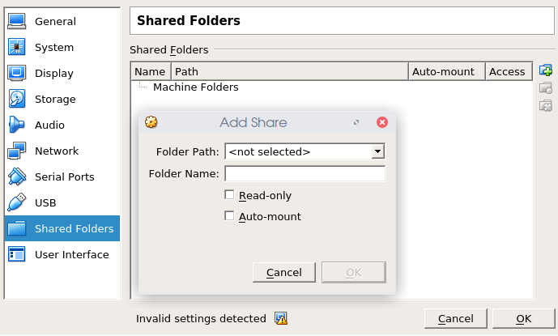
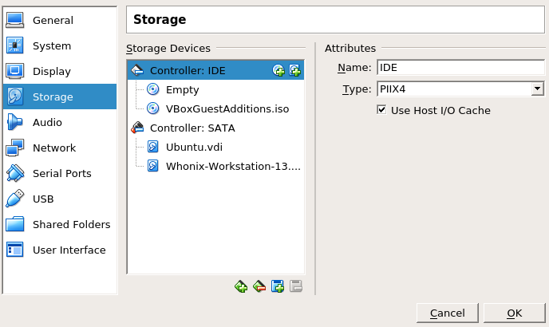

Hi, were you able to solve your problem? If not, you should probably backup your data and then just delete the VMs and setup new ones. To backup your data, you can try to follow these steps:
1. Make a backup of your Workstation disk
In case anything goes wrong, it is better to do a backup copy of your Workstation disk before attempting to backup your data.
In VirtualBox, make a right click on the Workstation VM, and chose “show in File Manager”. This will open the folder where your Workstation VM is. Make a copy of the “.vmdk” file.
2. Set up a new, separate Linux VM with shared folder
In VirtualBox, create a new Linux VM, Ubuntu for example. Install Linux guest additions to enable shared folders.
3. Create a shared folder
In VirtualBox, create or use a folder on the host to serve as a shared folder.

4. Add the Workstation disk to your Linux VM
In VirtualBox, add the Workstation disk to your new Linux VM

5. Copy the the data in the shared folder
Fire up the new Linux VM, access your Workstation disk and copy the files you want to save into the shared folder

{kind=link}
{kind=link}
{kind=link}
{kind=link}